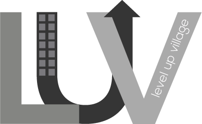

The logo should be used on anything that is branded as Level Up VIllage: website, all social media, handouts, posters, business cards, presentations, etc. It can be used along with the text “Level Up Village”, or without the text where the context is more obvious (ie: as the profile picture on Facebook).
The font is Nexa Light and Nexa Bold, you can find it for desktop or web here. It should be used on anything branded as Level Up Village: website, handouts, emails, business cards, printed media, online media where possible.
This is a headline. Size 36, Bold.
This is a subhead. Size 24, Bold.
This is body text. Size 18, Light.
This is a hyperlink. Size 18, Bold.
text #58585a
hyperlinks #9ccc4c
highlight #4b59a7
button #f9b416
highlight #8d91c8
text, colored background #ffffff
These should be printed for anyone representing the Level Up Village brand, and given out to spread awareness and make connections. They should include three lines.
Line 1: Name / Line 2: email / Line 3: number
The text should be Nexa Light.
8.5 x 11 template: logo and company name should be placed on the upper left hand corner with a dividing line centered, directly below. LUV's contact information should be centered at the very bottom of the template. This can be used for any printed materials such as classroom handouts or registration.
This style should be used for all outgoing emails in relation to Level Up Village. The header and footer image can be downloaded and placed directly into the email.
This text should be included at the bottom of the email:
"You are recieving this message because you have signed up at Levelupvillage.com to recieve our email newsletter. If you wish to leave this mailing, you can Unsubscribe Here."
Any presentation or powerpoint shown about Level Up Village should look like this template. Presentations can be shared on social media, through email, or on the website to promote awareness.
Presentations should have fewer words, and more images. Try to only put no more than 5-10 words on each slide. You can provide additional instructions to hand out to instructors and students that will go along with each slide, and provide more information.
Everything posted to Facebook in relation to Level Up Village should be shareable and act as an advertisement to spread awareness. The brand personality should come through in the tone of the posts, and be similar throughout. Encouraging others to engage with the content will help to drive more traffic to the page.
The logo should be used as your profile picture, and the brand colors should be used where possible.
There should be a post 2 times per week on what is happening with LUV, who is involved, the kids, pictures of classes and events, etc. Refer to editorial calendar for planning.
Ask questions to be engaging
Topics should be relevant to current LUV events
“Like” other peoples posts who mention you or other STEM topics
Post pictures after every event
“Tag” people from even photos (this will show up in their newsfeed, and their followers feeds
Level Up Village will need it's own Twitter account. The LUV twitter bio should be consistent across all social media platforms, (ie: "Level Up Village is an educational services company dedicated to creating a community of young global citizens through shared STEM based classes in the after-school space.")
The twitter image should be LUV's new logo with #F1AC58 (light orange from logo) as the background color. Link color (under settings -> design) should also be #F1AC58. Also be sure to include location and link to website.
Level Up Village should tweet once a day (refer to the editorial calendar for content examples and planning), using hashtags like #STEM #GlobalLearning #Technology & #SocialInnovation.
All content should further engage users in order to increase awareness.
Level Up Village should have its own twitter account
Topics should be relevant to current LUV events
Ask questions to be engaging
Tweet at people and companies
“Retweet” and respond to other peoples posts
Post pictures during and after events
Use relevant hashtags to describe LUV and current events (ex. #STEMLearning, #Technology #LUV)
Post articles from well known companies and influential bloggers, etc.
Tweet at people and companies
Use https://bitly.com/ to shorten URL’s
Everything posted to Pinterest in relation to Level Up Village should be shareable and act as an advertisement to spread awareness. The brand personality should come through in the tone of the posts, and be similar throughout. Encouraging others to engage with the content will help to drive more traffic to the page.
The images here can be downloaded directly and used on your Pinterest page. The logo should be used as your profile picture, and the brand colors should be used where possible.
There should be a post at least one time per day on what is happening with LUV, who is involved, the kids, pictures of classes and events, etc. Refer to editorial calendar for planning.
“Re-pin” posts that LUV would find interesting and relevant
Post facts about LUV and your events
Use this as a place to advertise and connect back to Facebook and podcasts
Try to create posts that can be used as unpaid media for yourself (things that people would want to re-pin, spreading awareness of LUV)
These comment cards should be printed out for each class (both in the U.S. and abroad) for anyone who was involved to fill out. The comments can be used on social media if they are positive, and all comments should be read and considered to improve the LUV experience.
These comment cards should be printed out for each class (both in the U.S. and abroad) for anyone who was involved to fill out. The comments can be used on social media if they are positive, and all comments should be read and considered to improve the LUV experience.
Thank you cards will be used to thank teachers, parents, partners etc. They can be sent through mail, emailed, or sent via social media. The cards are used to raise awareness for Level Up Village as well as to thank people involved with the company.
This is an example of how the Level Up Village editorial calendar should be planned out each week. This will help to regularly make posts on social media, and to think through the strategy of what should be posted at different times throughout the year.
Posting themes should match up with events and classes happening, holidays, seasons, and any other related happenings. Anyone who posts for LUV should have access to the calendar so they understand the regularity, tone, and strategy.
This pattern can be used as the background for Twitter, Facebook, and other social media sites. It should not be over used, for example do not use as the background for buttons on the website.